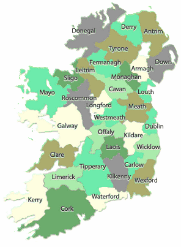

|
 Ireland
Family
Tree of the ancient O'Dubhda (O'Dowda) clan to the 18th century
Irish
research abstracts of the surname O'Dowde, O'Dowda, O'Dowd, Dowde,
and Dowdy
History
of the O'Dubhda Clan of Sligo, Mayo and Dublin
Clan O'Dubhda
DNA Project
Information on the O'Dowde Crest granted 1608
*Map from Ireland.ie
website
|

 Ireland
Ireland